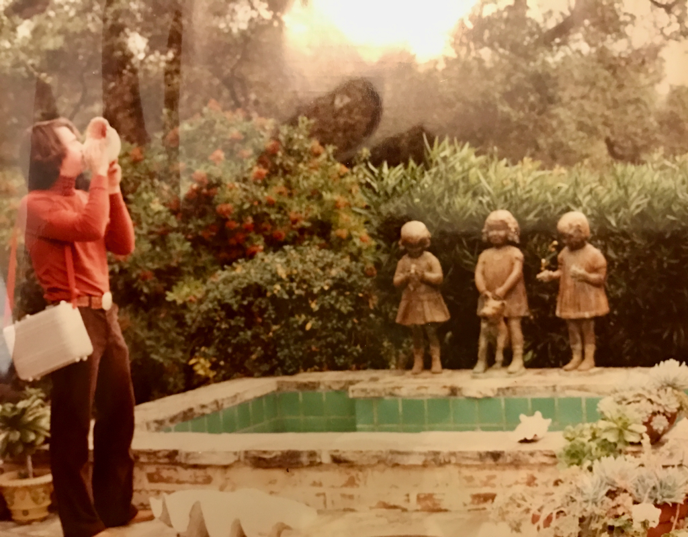

16 Vía Las Encinas
Carmel Valley, California
History


In 1930, Byington Ford purchased approximately 400 acres in Carmel Valley from real estate developer Frank Porter and established what became known as Moon Trail Ranch. Nestled in the hills above Carmel Valley, the property served as the family's summer ranch and reflected Ford's lifelong appreciation for the natural beauty of the Monterey Peninsula. Byington and his wife, Marion Boisot Ford, reached the ranch by way of Via Las Encinas, where their ranch home overlooked the surrounding valley.
Moon Trail Ranch was more than a seasonal retreat. The property featured a formal entrance from Carmel Valley Road, a horse barn, a gatekeeper's residence, two cottages, and a network of ranch roads winding through oak woodlands and open meadows. One of the ranch's most memorable features was The Mesa, a broad hayfield located on the highest part of the property. A dirt road climbed steadily to the top, where visitors were rewarded with sweeping views of Carmel Valley and the surrounding Santa Lucia Mountains. Near the summit was a small pond that added to the peaceful character of the landscape.
For the Ford family, Moon Trail Ranch was a place of lasting memories. Family members would often walk the dirt road leading to The Mesa, enjoying the quiet surroundings and stopping to admire the panoramic vistas from the mountaintop. These walks became part of the family's tradition, making the ranch not only a working property but also a cherished gathering place across generations.


Marion and Dudley retained the ranch's principal residence and surrounding acreage along Via Las Encinas. The following year, in 1971, Marion enlarged the main cottage by adding a spacious master bedroom and bath, adapting the home for comfortable year-round living while preserving its rustic ranch character.
Marion continued to reside at the Moon Trail Ranch home for nearly two decades. Surrounded by the familiar hills and oak-studded landscape she had loved since the 1930s, she remained there until her death on June 15, 1990. Although much of the original ranch passed into new ownership over the years, the memories of Moon Trail Ranch—its winding dirt roads, horse barn, cottages, The Mesa, and its tranquil pond overlooking Carmel Valley—remain an enduring part of the Ford family's history and of Carmel Valley's ranching heritage.

Last update: August 13, 2026